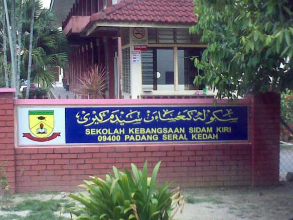
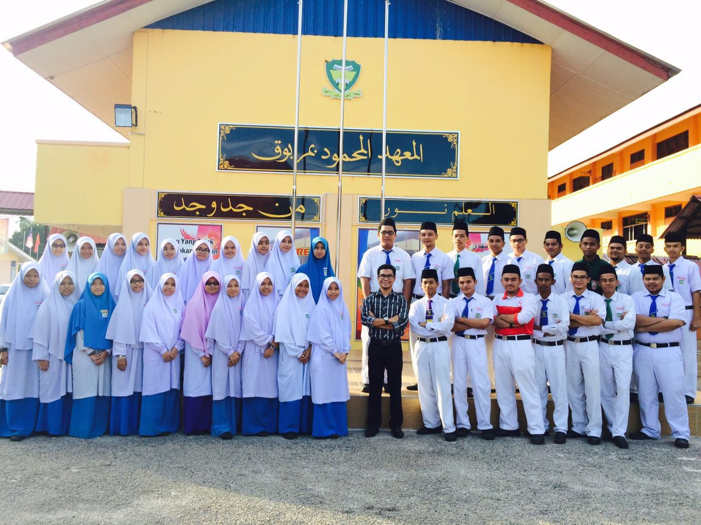
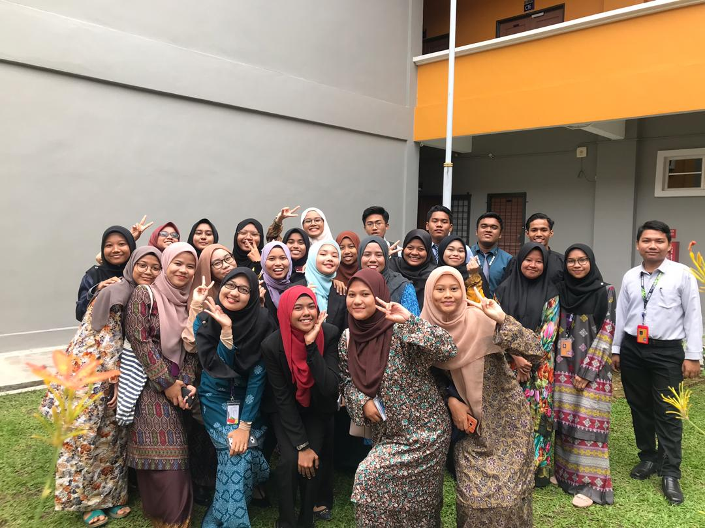

WELCOME TO MY WEBSITE !
PRIMARY SCHOOL
SECONDARY SCHOOL
UNIVERSITY
SKSK

My kindergarten and primary school is Sekolah Kebangsaan Sidam Kiri. It was located at Padang Serai, Kedah where that place is close to my house. I was studied at there since 2016 until 2011.
Most of my neighbourhood were the students at there because our resident was nearby with our school. I have been given a trophy as the best student that have a good grades in my Year 4 and Year 5.
My friends and I usually go to school by riding a bicycle and some students may took a bus to go to the school.
I have got many friends from my secondary school and we have never been lost contact because we always meet up and make some reunion between us.
MMMK

My secondary school is Maktab Mahmud Merbok. I got my SPM result at there in 2016. I have achieved my certificate of my SMAMM's results in my Form 4.
I have stayed in hostel at my secondary school because my house was quite far from my school. During my school, I have participated in sports which was handball
and I got some prizes for my competition between the other schools. Besides that, I also have been selected as a school librarian in Form 2 and I was got an award
of being a good role for school librarian where we as the librarian always do our duty and responsible in doing our works.
UITM KEDAH

My university that I go is Universiti Teknologi Mara at Kedah. I was major in Information Management since my semester 1. I have made many friends when I enter this college for the first time.
Some of my friends were major in different course. In UITM, I also have stayed at hostel until I finish my semester. When I'm studies at UITM, I have got many knowledge from my lecturer in the class. I also have participated in
co-curriculum activities such as being a member in a club, play handball during my leisure time, jogging with my friends in the morning, attend an events and others.